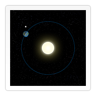
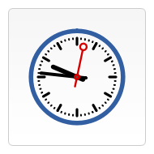

Since we're using JavaScript to control <canvas> elements, it's also very easy to make (interactive) animations. In this chapter we will take a look at how to do some basic animations.
Probably the biggest limitation is, that once a shape gets drawn, it stays that way. If we need to move it we have to redraw it and everything that was drawn before it. It takes a lot of time to redraw complex frames and the performance depends highly on the speed of the computer it's running on.
Basic animation steps
These are the steps you need to take to draw a frame:
- Clear the canvas
Unless the shapes you'll be drawing fill the complete canvas (for instance a backdrop image), you need to clear any shapes that have been drawn previously. The easiest way to do this is using theclearRect()method. - Save the canvas state
If you're changing any setting (such as styles, transformations, etc.) which affect the canvas state and you want to make sure the original state is used each time a frame is drawn, you need to save that original state. - Draw animated shapes
The step where you do the actual frame rendering. - Restore the canvas state
If you've saved the state, restore it before drawing a new frame.
Controlling an animation
Shapes are drawn to the canvas by using the canvas methods directly or by calling custom functions. In normal circumstances, we only see these results appear on the canvas when the script finishes executing. For instance, it isn't possible to do an animation from within a for loop.
That means we need a way to execute our drawing functions over a period of time. There are two ways to control an animation like this.
Scheduled updates
First there's the window.setInterval(), window.setTimeout(), and window.requestAnimationFrame() functions, which can be used to call a specific function over a set period of time.
setInterval(function, delay)- Starts repeatedly executing the function specified by
functioneverydelaymilliseconds. setTimeout(function, delay)- Executes the function specified by
functionindelaymilliseconds. requestAnimationFrame(callback)- Tells the browser that you wish to perform an animation and requests that the browser call a specified function to update an animation before the next repaint.
If you don't want any user interaction you can use the setInterval() function which repeatedly executes the supplied code. If we wanted to make a game, we could use keyboard or mouse events to control the animation and use setTimeout(). By setting EventListeners, we catch any user interaction and execute our animation functions.
In the examples below, we'll use the window.requestAnimationFrame() method to control the animation. The requestAnimationFrame method provides a smoother and more efficient way for animating by calling the animation frame when the system is ready to paint the frame. The number of callbacks is usually 60 times per second and may be reduced to a lower rate when running in background tabs. For more information about the animation loop, especially for games, see the article Anatomy of a video game in our Game development zone.
An animated solar system
This example animates a small model of our solar system.
var sun = new Image();
var moon = new Image();
var earth = new Image();
function init(){
sun.src = 'https://mdn.mozillademos.org/files/1456/Canvas_sun.png';
moon.src = 'https://mdn.mozillademos.org/files/1443/Canvas_moon.png';
earth.src = 'https://mdn.mozillademos.org/files/1429/Canvas_earth.png';
window.requestAnimationFrame(draw);
}
function draw() {
var ctx = document.getElementById('canvas').getContext('2d');
ctx.globalCompositeOperation = 'destination-over';
ctx.clearRect(0,0,300,300); // clear canvas
ctx.fillStyle = 'rgba(0,0,0,0.4)';
ctx.strokeStyle = 'rgba(0,153,255,0.4)';
ctx.save();
ctx.translate(150,150);
// Earth
var time = new Date();
ctx.rotate( ((2*Math.PI)/60)*time.getSeconds() + ((2*Math.PI)/60000)*time.getMilliseconds() );
ctx.translate(105,0);
ctx.fillRect(0,-12,50,24); // Shadow
ctx.drawImage(earth,-12,-12);
// Moon
ctx.save();
ctx.rotate( ((2*Math.PI)/6)*time.getSeconds() + ((2*Math.PI)/6000)*time.getMilliseconds() );
ctx.translate(0,28.5);
ctx.drawImage(moon,-3.5,-3.5);
ctx.restore();
ctx.restore();
ctx.beginPath();
ctx.arc(150,150,105,0,Math.PI*2,false); // Earth orbit
ctx.stroke();
ctx.drawImage(sun,0,0,300,300);
window.requestAnimationFrame(draw);
}
init();
<canvas id="canvas" width="300" height="300"></canvas>
| Screenshot | Live sample |
|---|---|
|  |
An animated clock
This example draws an animated clock, showing your current time.
function clock(){
var now = new Date();
var ctx = document.getElementById('canvas').getContext('2d');
ctx.save();
ctx.clearRect(0,0,150,150);
ctx.translate(75,75);
ctx.scale(0.4,0.4);
ctx.rotate(-Math.PI/2);
ctx.strokeStyle = "black";
ctx.fillStyle = "white";
ctx.lineWidth = 8;
ctx.lineCap = "round";
// Hour marks
ctx.save();
for (var i=0;i<12;i++){
ctx.beginPath();
ctx.rotate(Math.PI/6);
ctx.moveTo(100,0);
ctx.lineTo(120,0);
ctx.stroke();
}
ctx.restore();
// Minute marks
ctx.save();
ctx.lineWidth = 5;
for (i=0;i<60;i++){
if (i%5!=0) {
ctx.beginPath();
ctx.moveTo(117,0);
ctx.lineTo(120,0);
ctx.stroke();
}
ctx.rotate(Math.PI/30);
}
ctx.restore();
var sec = now.getSeconds();
var min = now.getMinutes();
var hr = now.getHours();
hr = hr>=12 ? hr-12 : hr;
ctx.fillStyle = "black";
// write Hours
ctx.save();
ctx.rotate( hr*(Math.PI/6) + (Math.PI/360)*min + (Math.PI/21600)*sec )
ctx.lineWidth = 14;
ctx.beginPath();
ctx.moveTo(-20,0);
ctx.lineTo(80,0);
ctx.stroke();
ctx.restore();
// write Minutes
ctx.save();
ctx.rotate( (Math.PI/30)*min + (Math.PI/1800)*sec )
ctx.lineWidth = 10;
ctx.beginPath();
ctx.moveTo(-28,0);
ctx.lineTo(112,0);
ctx.stroke();
ctx.restore();
// Write seconds
ctx.save();
ctx.rotate(sec * Math.PI/30);
ctx.strokeStyle = "#D40000";
ctx.fillStyle = "#D40000";
ctx.lineWidth = 6;
ctx.beginPath();
ctx.moveTo(-30,0);
ctx.lineTo(83,0);
ctx.stroke();
ctx.beginPath();
ctx.arc(0,0,10,0,Math.PI*2,true);
ctx.fill();
ctx.beginPath();
ctx.arc(95,0,10,0,Math.PI*2,true);
ctx.stroke();
ctx.fillStyle = "rgba(0,0,0,0)";
ctx.arc(0,0,3,0,Math.PI*2,true);
ctx.fill();
ctx.restore();
ctx.beginPath();
ctx.lineWidth = 14;
ctx.strokeStyle = '#325FA2';
ctx.arc(0,0,142,0,Math.PI*2,true);
ctx.stroke();
ctx.restore();
window.requestAnimationFrame(clock);
}
window.requestAnimationFrame(clock);
<canvas id="canvas" width="150" height="150"></canvas>
| Screenshot | Live sample |
|---|---|
|  |
A looping panorama
In this example, a panorama is scrolled left-to-right. We're using an image of Yosemite National Park we took from Wikipedia, but you could use any image that's larger than the canvas.
{kind=link}
var img = new Image();
// User Variables - customize these to change the image being scrolled, its
// direction, and the speed.
img.src = 'https://mdn.mozillademos.org/files/4553/Capitan_Meadows,_Yosemite_National_Park.jpg';
var CanvasXSize = 800;
var CanvasYSize = 200;
var speed = 30; //lower is faster
var scale = 1.05;
var y = -4.5; //vertical offset
// Main program
var dx = 0.75;
var imgW;
var imgH;
var x = 0;
var clearX;
var clearY;
var ctx;
img.onload = function() {
imgW = img.width*scale;
imgH = img.height*scale;
if (imgW > CanvasXSize) { x = CanvasXSize-imgW; } // image larger than canvas
if (imgW > CanvasXSize) { clearX = imgW; } // image larger than canvas
else { clearX = CanvasXSize; }
if (imgH > CanvasYSize) { clearY = imgH; } // image larger than canvas
else { clearY = CanvasYSize; }
//Get Canvas Element
ctx = document.getElementById('canvas').getContext('2d');
//Set Refresh Rate
return setInterval(draw, speed);
}
function draw() {
//Clear Canvas
ctx.clearRect(0,0,clearX,clearY);
//If image is <= Canvas Size
if (imgW <= CanvasXSize) {
//reset, start from beginning
if (x > (CanvasXSize)) { x = 0; }
//draw aditional image
if (x > (CanvasXSize-imgW)) { ctx.drawImage(img,x-CanvasXSize+1,y,imgW,imgH); }
}
//If image is > Canvas Size
else {
//reset, start from beginning
if (x > (CanvasXSize)) { x = CanvasXSize-imgW; }
//draw aditional image
if (x > (CanvasXSize-imgW)) { ctx.drawImage(img,x-imgW+1,y,imgW,imgH); }
}
//draw image
ctx.drawImage(img,x,y,imgW,imgH);
//amount to move
x += dx;
}
Below is the <canvas> in which the image is scrolled. Note that the width and height specified here must match the values of the CanvasXZSize and CanvasYSize variables in the JavaScript code.
<canvas id="canvas" width="800" height="200"></canvas>
Other examples
- A basic ray-caster
- A good example of how to do animations using keyboard controls.
- Advanced animations
- We will have a look at some advanced animation techniques and physics in the next chapter.